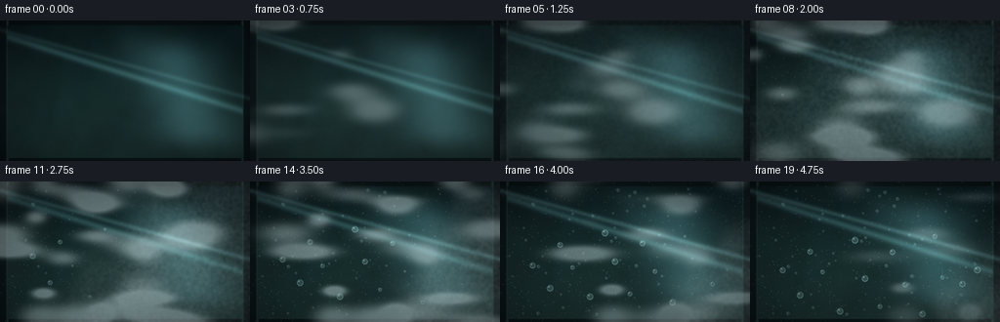
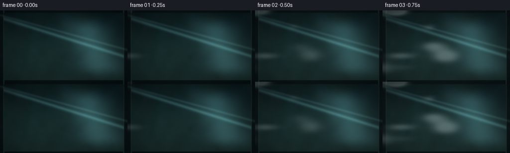
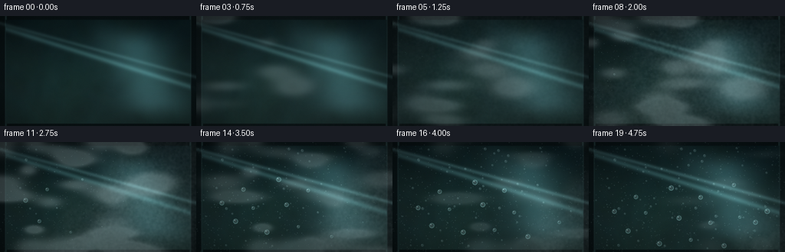
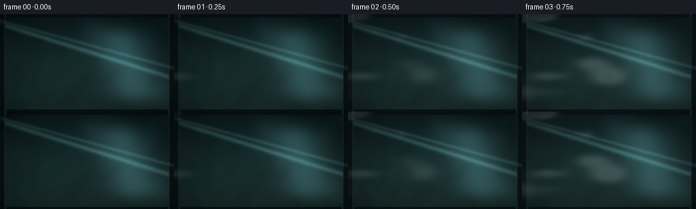
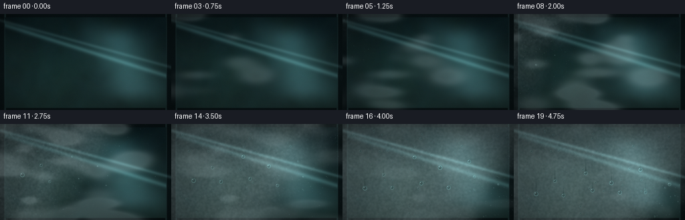
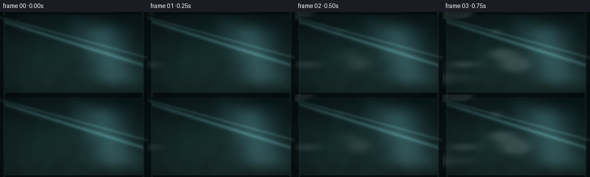

CODING AGENTS AS PIXEL WORLD MODELS
traex/DeepSeek-V4.1-Flash · phygen_101
点击播放 · 原生 RGB 像素
此结果可播放，但该运行尚未通过最终提交审核。页面展示不代表评测通过。
逐轮保存的候选
回放视频、检查图与代码变化。
每份候选均可单独播放。实际图片检查记录在下方工具轨迹中。
候选 01播放与检查图
点击播放 · 原生 RGB 像素


展开代码变化
--- 上一保存版本
+++ 本次保存版本
@@ -0,0 +1,417 @@
+from pathlib import Path
+
+import cv2
+import numpy as np
+from PIL import Image, ImageFilter
+
+import artifact_io
+
+
+WIDTH = 256
+HEIGHT = 144
+FRAMES = 20
+SCALE = 3
+RW = WIDTH * SCALE
+RH = HEIGHT * SCALE
+OUT_DIR = Path(__file__).resolve().parent
+RNG = np.random.default_rng(1107)
+
+
+def smoothstep(edge0, edge1, x):
+ u = np.clip((x - edge0) / max(edge1 - edge0, 1e-6), 0.0, 1.0)
+ return u * u * (3.0 - 2.0 * u)
+
+
+def bilinear(image, x, y):
+ h, w = image.shape[:2]
+ x = np.clip(x, 0.0, w - 1.001)
+ y = np.clip(y, 0.0, h - 1.001)
+ x0 = np.floor(x).astype(np.int32)
+ y0 = np.floor(y).astype(np.int32)
+ x1 = np.minimum(x0 + 1, w - 1)
+ y1 = np.minimum(y0 + 1, h - 1)
+ fx = (x - x0)[..., None]
+ fy = (y - y0)[..., None]
+ top = image[y0, x0] * (1.0 - fx) + image[y0, x1] * fx
+ bottom = image[y1, x0] * (1.0 - fx) + image[y1, x1] * fx
+ return top * (1.0 - fy) + bottom * fy
+
+
+def soft_noise(shape, cells, blur, rng):
+ small = rng.normal(size=(max(3, shape[0] // cells), max(3, shape[1] // cells)))
+ small = cv2.resize(small, (shape[1], shape[0]), interpolation=cv2.INTER_CUBIC)
+ return cv2.GaussianBlur(small, (0, 0), blur)
+
+
+def build_background():
+ y, x = np.mgrid[0:RH, 0:RW].astype(np.float32)
+ xn = x / (RW - 1)
+ yn = y / (RH - 1)
+
+ top = np.array([12, 33, 36], dtype=np.float32)
+ bottom = np.array([28, 54, 51], dtype=np.float32)
+ bg = top[None, None, :] * (1.0 - yn[..., None]) + bottom[None, None, :] * yn[..., None]
+
+ coarse = soft_noise((RH, RW), 18, 24 * SCALE, RNG)
+ medium = soft_noise((RH, RW), 7, 10 * SCALE, RNG)
+ fine = soft_noise((RH, RW), 3, 3.0 * SCALE, RNG)
+ coarse = (coarse - coarse.min()) / (coarse.max() - coarse.min() + 1e-6)
+ medium = (medium - medium.min()) / (medium.max() - medium.min() + 1e-6)
+
+ moss = np.array([28, 67, 55], dtype=np.float32)
+ amber = np.array([90, 76, 46], dtype=np.float32)
+ cool = np.array([30, 62, 70], dtype=np.float32)
+ bg += (coarse[..., None] - 0.5) * (moss - bg) * 0.34
+ bg += smoothstep(0.45, 0.9, medium)[..., None] * (cool - bg) * 0.20
+ bg += (fine[..., None] * 3.2)
+
+ canvas = Image.fromarray(np.clip(bg, 0, 255).astype(np.uint8))
+ glow = Image.new("RGBA", (RW, RH), (0, 0, 0, 0))
+ gd = np.asarray(glow).copy()
+ yy, xx = np.mgrid[0:RH, 0:RW].astype(np.float32)
+ for _ in range(24):
+ cx = RNG.uniform(-0.08, 1.08) * RW
+ cy = RNG.uniform(-0.04, 1.04) * RH
+ rx = RNG.uniform(18, 80) * SCALE
+ ry = rx * RNG.uniform(0.55, 1.55)
+ color = RNG.choice(
+ [[121, 133, 72], [115, 91, 49], [58, 113, 105], [42, 91, 89]]
+ )
+ strength = RNG.uniform(0.08, 0.22)
+ ellipse = ((xx - cx) / rx) ** 2 + ((yy - cy) / ry) ** 2
+ alpha = np.exp(-2.2 * ellipse) * strength * 255
+ for channel in range(3):
+ gd[..., channel] = np.maximum(gd[..., channel], alpha * color[channel] / 255.0)
+ gd[..., 3] = np.maximum(gd[..., 3], alpha)
+ glow = Image.fromarray(np.clip(gd, 0, 255).astype(np.uint8), "RGBA")
+ glow = glow.filter(ImageFilter.GaussianBlur(13 * SCALE))
+ canvas = Image.alpha_composite(canvas.convert("RGBA"), glow).convert("RGB")
+ bg = np.asarray(canvas).astype(np.float32)
+
+ # Defocused garden lights and foliage.
+ foliage = Image.new("RGBA", (RW, RH), (0, 0, 0, 0))
+ fd = np.asarray(foliage).copy()
+ for _ in range(34):
+ cx = RNG.uniform(0.02, 0.98) * RW
+ cy = RNG.uniform(0.04, 0.95) * RH
+ rx = RNG.uniform(4, 17) * SCALE
+ ry = rx * RNG.uniform(1.2, 2.7)
+ angle = RNG.uniform(-1.0, 1.0)
+ color = RNG.choice([[78, 105, 65], [93, 118, 72], [44, 87, 71]])
+ alpha = RNG.uniform(20, 52)
+ ellipse = ((xx - cx) * np.cos(angle) + (yy - cy) * np.sin(angle)) ** 2 / (rx * rx)
+ ellipse += (-(xx - cx) * np.sin(angle) + (yy - cy) * np.cos(angle)) ** 2 / (ry * ry)
+ mask = np.exp(-1.6 * ellipse) * alpha
+ for channel in range(3):
+ fd[..., channel] = np.maximum(fd[..., channel], mask * color[channel] / 255.0)
+ fd[..., 3] = np.maximum(fd[..., 3], mask)
+ foliage = Image.fromarray(np.clip(fd, 0, 255).astype(np.uint8), "RGBA")
+ foliage = foliage.filter(ImageFilter.GaussianBlur(2.6 * SCALE))
+ canvas = Image.alpha_composite(canvas.convert("RGBA"), foliage).convert("RGB")
+
+ # Cold glass and a broad reflection from an unseen window.
+ bg = np.asarray(canvas).astype(np.float32)
+ reflection = np.exp(-((xn - 0.73 - 0.20 * (yn - 0.5)) / 0.16) ** 2)
+ reflection *= smoothstep(0.02, 0.30, yn) * (1.0 - smoothstep(0.77, 1.0, yn))
+ bg += reflection[..., None] * np.array([30, 48, 50], dtype=np.float32)
+ streak = np.exp(-((yn - 0.10 - 0.56 * xn) / 0.025) ** 2)
+ bg += streak[..., None] * np.array([26, 41, 41], dtype=np.float32)
+
+ # A dark window frame anchors the image as glass rather than open air.
+ border_x = 7.5 * SCALE
+ border_y = 5.0 * SCALE
+ frame = np.zeros((RH, RW), dtype=np.float32)
+ frame = np.maximum(frame, 1.0 - smoothstep(border_x - 1.2 * SCALE, border_x + 0.6 * SCALE, x))
+ frame = np.maximum(frame, 1.0 - smoothstep(border_x - 1.2 * SCALE, border_x + 0.6 * SCALE, RW - 1 - x))
+ frame = np.maximum(frame, 1.0 - smoothstep(border_y - 1.0 * SCALE, border_y + 0.5 * SCALE, y))
+ frame = np.maximum(frame, 1.0 - smoothstep(2.4 * SCALE, 3.4 * SCALE, RH - 1 - y))
+ frame_color = np.array([8, 18, 20], dtype=np.float32)
+ frame_light = np.exp(-((x - border_x) / (1.1 * SCALE)) ** 2)
+ frame_light += np.exp(-((x - (RW - 1 - border_x)) / (1.1 * SCALE)) ** 2)
+ frame_color = frame_color + frame_light[..., None] * np.array([29, 45, 44], dtype=np.float32)
+ bg = bg * (1.0 - frame[..., None] * 0.92) + frame_color * (frame[..., None] * 0.92)
+
+ return np.clip(bg, 0, 255)
+
+
+def build_vapor_puffs():
+ puffs = []
+ for i in range(34):
+ puffs.append(
+ {
+ "x0": RNG.uniform(-0.30, 0.45),
+ "y0": RNG.uniform(-0.10, 1.02),
+ "vx": RNG.uniform(0.70, 1.40),
+ "vy": RNG.uniform(-0.16, 0.16),
+ "sx": RNG.uniform(0.055, 0.16),
+ "sy": RNG.uniform(0.045, 0.13),
+ "phase": RNG.uniform(0, 2 * np.pi),
+ "amp": RNG.uniform(0.55, 1.30),
+ "life": RNG.uniform(0.50, 0.95),
+ "delay": RNG.uniform(-0.05, 0.48),
+ }
+ )
+ return puffs
+
+
+def build_droplets():
+ drops = []
+ # Fine condensation first, concentrated in clustered pockets.
+ for _ in range(720):
+ x = RNG.uniform(0.0, 1.0)
+ y = RNG.uniform(0.0, 1.0)
+ birth = 0.08 + 0.60 * np.clip(x + 0.42 * y, 0, 1.25) / 1.25 + RNG.normal(0, 0.055)
+ drops.append(
+ {
+ "x": x,
+ "y": y,
+ "r": RNG.uniform(0.30, 0.90),
+ "birth": birth,
+ "grow": RNG.uniform(0.18, 0.40),
+ "kind": 0,
+ "phase": RNG.uniform(0, 2 * np.pi),
+ }
+ )
+
+ # Medium beads that become the dominant texture late in the timelapse.
+ for _ in range(82):
+ x = RNG.uniform(0.03, 0.97)
+ y = RNG.uniform(0.05, 0.97)
+ birth = 0.26 + 0.54 * np.clip(x + 0.35 * y, 0, 1.2) / 1.2 + RNG.normal(0, 0.045)
+ drops.append(
+ {
+ "x": x,
+ "y": y,
+ "r": RNG.uniform(0.85, 2.10),
+ "birth": birth,
+ "grow": RNG.uniform(0.20, 0.38),
+ "kind": 1,
+ "phase": RNG.uniform(0, 2 * np.pi),
+ }
+ )
+
+ # A handful of larger drops slide downward and clear narrow trails.
+ large_positions = [
+ (0.13, 0.53), (0.20, 0.72), (0.29, 0.60), (0.36, 0.82),
+ (0.46, 0.57), (0.52, 0.77), (0.62, 0.64), (0.69, 0.86),
+ (0.77, 0.55), (0.85, 0.73), (0.91, 0.63), (0.24, 0.43),
+ (0.57, 0.44), (0.74, 0.39), (0.42, 0.34),
+ ]
+ for i, (x, y) in enumerate(large_positions):
+ birth = 0.30 + 0.48 * x + RNG.uniform(-0.03, 0.06)
+ slide = birth + RNG.uniform(0.20, 0.35)
+ drops.append(
+ {
+ "x": x,
+ "y": y,
+ "r": RNG.uniform(2.3, 4.1),
+ "birth": birth,
+ "grow": RNG.uniform(0.18, 0.30),
+ "kind": 2,
+ "slide": slide,
+ "speed": RNG.uniform(0.020, 0.050),
+ "travel": RNG.uniform(0.04, 0.14),
+ "phase": RNG.uniform(0, 2 * np.pi),
+ }
+ )
+ return drops
+
+
+BACKGROUND = build_background()
+VAPOR_PUFFS = build_vapor_puffs()
+DROPLETS = build_droplets()
+
+
+def vapor_field(t):
+ y, x = np.mgrid[0:RH, 0:RW].astype(np.float32)
+ xn = x / (RW - 1)
+ yn = y / (RH - 1)
+ field = np.zeros((RH, RW), dtype=np.float32)
+ for puff in VAPOR_PUFFS:
+ age = t - puff["delay"]
+ if age <= 0 or age >= puff["life"]:
+ continue
+ cx = puff["x0"] + puff["vx"] * age
+ cy = puff["y0"] + puff["vy"] * age + 0.016 * np.sin(5.0 * age + puff["phase"])
+ sx = puff["sx"] * (1.0 + 0.22 * age)
+ sy = puff["sy"] * (1.0 + 0.14 * age)
+ envelope = smoothstep(0.0, 0.12, age) * (1.0 - smoothstep(puff["life"] * 0.72, puff["life"], age))
+ g = np.exp(-(((xn - cx) / sx) ** 2 + ((yn - cy) / sy) ** 2) * 1.7)
+ field += puff["amp"] * envelope * g
+ field *= 0.55 + 0.45 * np.sin(0.5 * np.pi * np.clip(t * 1.15, 0, 1))
+ return field
+
+
+def condensation_coverage(t):
+ y, x = np.mgrid[0:RH, 0:RW].astype(np.float32)
+ xn = x / (RW - 1)
+ yn = y / (RH - 1)
+ n = soft_noise((RH, RW), 22, 9 * SCALE, RNG)
+ n = (n - n.min()) / (n.max() - n.min() + 1e-6)
+ front = -0.18 + 1.42 * smoothstep(0.0, 1.0, t)
+ diagonal = xn + 0.42 * yn
+ coverage = smoothstep(front - 0.22, front + 0.16, diagonal + (n - 0.5) * 0.18)
+ coverage *= smoothstep(0.01, 0.16, t)
+ return coverage, n
+
+
+def draw_trails(image, fog, drops, t):
+ h, w = image.shape[:2]
+ for drop in drops:
+ if drop["kind"] != 2 or t < drop["slide"]:
+ continue
+ x = drop["x"] * (w - 1)
+ y0 = drop["y"] * (h - 1)
+ travel = drop["travel"] * smoothstep(drop["slide"], min(0.98, drop["slide"] + 0.42), t)
+ y1 = y0 + travel * (h - 1)
+ half_width = max(1.2, drop["r"] * 0.30) * SCALE
+ xa = max(0, int(x - half_width - 2 * SCALE))
+ xb = min(w, int(x + half_width + 2 * SCALE))
+ ya = max(0, int(y0 - 2 * SCALE))
+ yb = min(h, int(y1 + 2 * SCALE))
+ if xb <= xa or yb <= ya:
+ continue
+ yy, xx = np.mgrid[ya:yb, xa:xb].astype(np.float32)
+ center_dist = np.abs(xx - x) / half_width
+ mask = np.exp(-2.5 * center_dist ** 2) * smoothstep(0.0, 1.0, (yy - y0) / max(y1 - y0, 1))
+ mask *= 0.30
+ patch = image[ya:yb, xa:xb]
+ patch += mask[..., None] * np.array([19, 28, 27], dtype=np.float32)
+ image[ya:yb, xa:xb] = np.clip(patch, 0, 255)
+ fog_patch = fog[ya:yb, xa:xb]
+ fog_patch *= 1.0 - mask * 0.52
+ fog[ya:yb, xa:xb] = fog_patch
+
+
+def draw_droplets(image, drops, t, fog_strength):
+ h, w = image.shape[:2]
+ for drop in drops:
+ visible = smoothstep(drop["birth"], drop["birth"] + drop["grow"], t)
+ if visible <= 0.01:
+ continue
+ x = drop["x"] * (w - 1)
+ y = drop["y"] * (h - 1)
+ if drop["kind"] == 2:
+ slide = smoothstep(drop["slide"], min(0.98, drop["slide"] + 0.42), t)
+ y += drop["travel"] * (h - 1) * slide
+ radius = drop["r"] * SCALE * (0.30 + 0.70 * visible)
+ if drop["kind"] == 0:
+ radius *= 0.86
+ reach = int(np.ceil(radius + 3.0 * SCALE))
+ xa, xb = max(0, int(x) - reach), min(w, int(x) + reach + 1)
+ ya, yb = max(0, int(y) - reach), min(h, int(y) + reach + 1)
+ if xb <= xa or yb <= ya:
+ continue
+ yy, xx = np.mgrid[ya:yb, xa:xb].astype(np.float32)
+ dx = xx - x
+ dy = yy - y
+ dist = np.sqrt(dx * dx + dy * dy)
+ aa = 1.25 * SCALE if drop["kind"] < 2 else 1.05 * SCALE
+ mask = 1.0 - smoothstep(radius - aa, radius + aa * 0.30, dist)
+ if mask.max() <= 0:
+ continue
+ norm = np.clip(dist / max(radius, 1e-3), 0, 1.3)
+
+ # A small convex lens displacement reveals the defocused scene inside.
+ lens = 0.10 + 0.23 * (1.0 - norm)
+ sx = xx + dx * lens
+ sy = yy + dy * lens
+ ref = bilinear(BACKGROUND, sx, sy)
+ cool_center = np.array([179, 207, 207], dtype=np.float32)
+ tint = (1.0 - norm[..., None] * 0.35) * 0.24
+ color = ref * (0.80 + 0.15 * norm[..., None]) + cool_center * tint
+
+ rim = np.exp(-((norm - 0.83) / 0.16) ** 2)
+ color += rim[..., None] * np.array([34, 52, 50], dtype=np.float32)
+ lower_glint = np.clip((dy / max(radius, 1e-3)) * 0.5 + 0.5, 0, 1)
+ color += (rim * lower_glint)[..., None] * np.array([35, 47, 45], dtype=np.float32)
+
+ highlight_r = max(0.30 * SCALE, radius * (0.18 if drop["kind"] == 2 else 0.24))
+ hx = x - radius * 0.31
+ hy = y - radius * 0.35
+ highlight = np.exp(-(((xx - hx) ** 2 + (yy - hy) ** 2) / (highlight_r ** 2 + 1e-4)))
+ color += highlight[..., None] * (75.0 + 58.0 * (drop["kind"] == 2))
+
+ if drop["kind"] == 0:
+ color = color * 0.92 + np.array([193, 216, 212], dtype=np.float32) * 0.08
+ alpha = mask * (0.82 if drop["kind"] == 2 else 0.72)
+ patch = image[ya:yb, xa:xb]
+ image[ya:yb, xa:xb] = patch * (1.0 - alpha[..., None]) + color * alpha[..., None]
+
+ # Dense beads suppress a little of the surrounding milky film.
+ if drop["kind"] == 2:
+ halo = np.exp(-((dist / (radius * 1.65)) ** 2)) * 0.16
+ fog_patch = fog_strength[ya:yb, xa:xb]
+ fog_strength[ya:yb, xa:xb] = fog_patch * (1.0 - halo)
+
+
+def render_frame(index):
+ t = index / (FRAMES - 1)
+ y, x = np.mgrid[0:RH, 0:RW].astype(np.float32)
+ xn = x / (RW - 1)
+ yn = y / (RH - 1)
+
+ image = BACKGROUND.copy()
+
+ # Fine bloom on the cold pane, spreading diagonally from the upper left.
+ coverage, noise = condensation_coverage(t)
+ film_alpha = coverage * (0.025 + 0.24 * smoothstep(0.08, 0.94, t))
+ film_alpha *= 0.70 + 0.30 * noise
+ mist_color = np.array([190, 211, 209], dtype=np.float32)
+ image = image * (1.0 - film_alpha[..., None]) + mist_color * film_alpha[..., None]
+
+ # Granular condensation gives the pane its frosty microtexture.
+ grain = soft_noise((RH, RW), 2, 1.1 * SCALE, RNG)
+ grain = np.tanh(grain * 1.3) * 0.5 + 0.5
+ frost = coverage * smoothstep(0.10, 0.50, t) * (grain - 0.5) * 30.0
+ image += frost[..., None]
+
+ fog_for_trails = film_alpha.copy()
+ draw_trails(image, fog_for_trails, DROPLETS, t)
+ image = image * (1.0 - np.clip(film_alpha - fog_for_trails, 0, 1)[..., None])
+ image += mist_color * np.clip(film_alpha - fog_for_trails, 0, 1)[..., None]
+ draw_droplets(image, DROPLETS, t, fog_for_trails)
+
+ # Humid air rolls across the glass in soft, luminous sheets.
+ vapor = vapor_field(t)
+ vapor = np.clip(vapor, 0, 1.45)
+ vapor_alpha = smoothstep(0.025, 0.92, vapor) * (0.34 + 0.16 * smoothstep(0.0, 0.65, t))
+ vapor_alpha *= 1.0 - 0.38 * smoothstep(0.73, 1.0, t)
+ vapor_color = np.broadcast_to(
+ np.array([192, 211, 210], dtype=np.float32), (RH, RW, 3)
+ ).copy()
+ vapor_color += np.array([9, 15, 16], dtype=np.float32) * yn[..., None]
+ image = image * (1.0 - vapor_alpha[..., None]) + vapor_color * vapor_alpha[..., None]
+
+ # Cool reflected light skims the top of the glass.
+ glint = np.exp(-((yn - 0.065 - 0.49 * xn) / 0.018) ** 2)
+ glint *= 0.36 + 0.30 * smoothstep(0.1, 0.8, t)
+ image += glint[..., None] * np.array([39, 57, 57], dtype=np.float32)
+
+ # Slight exposure lift as the pane clouds, plus a restrained color grade.
+ lift = smoothstep(0.0, 1.0, t)
+ image += np.array([1.8, 2.5, 2.3], dtype=np.float32) * lift
+ luminance = image.mean(axis=2, keepdims=True)
+ image = image * 0.93 + luminance * 0.07
+ image[..., 2] *= 1.015
+ image[..., 0] *= 0.985
+
+ # Vignette and sensor grain keep the macro image photographic.
+ vignette = 1.0 - 0.22 * ((xn - 0.5) ** 2 / 0.25 + (yn - 0.5) ** 2 / 0.25)
+ image *= vignette[..., None]
+ grain = RNG.normal(0, 0.85, (RH, RW, 1))
+ image += grain
+
+ image = np.clip(image, 0, 255).astype(np.uint8)
+ frame = Image.fromarray(image).resize((WIDTH, HEIGHT), Image.Resampling.LANCZOS)
+ return np.asarray(frame, dtype=np.uint8)
+
+
+def main():
+ frames = np.stack([render_frame(i) for i in range(FRAMES)])
+ artifact_io.save(frames, OUT_DIR)
+ print(f"saved {len(frames)} frames to {OUT_DIR}")
+
+
+if __name__ == "__main__":
+ main()
候选 02播放与检查图
点击播放 · 原生 RGB 像素

展开代码变化
--- 上一保存版本
+++ 本次保存版本
@@ -355,15 +355,15 @@
# Fine bloom on the cold pane, spreading diagonally from the upper left.
coverage, noise = condensation_coverage(t)
- film_alpha = coverage * (0.025 + 0.24 * smoothstep(0.08, 0.94, t))
- film_alpha *= 0.70 + 0.30 * noise
+ film_alpha = coverage * (0.020 + 0.115 * smoothstep(0.06, 0.94, t))
+ film_alpha *= 0.76 + 0.24 * noise
mist_color = np.array([190, 211, 209], dtype=np.float32)
image = image * (1.0 - film_alpha[..., None]) + mist_color * film_alpha[..., None]
# Granular condensation gives the pane its frosty microtexture.
grain = soft_noise((RH, RW), 2, 1.1 * SCALE, RNG)
grain = np.tanh(grain * 1.3) * 0.5 + 0.5
- frost = coverage * smoothstep(0.10, 0.50, t) * (grain - 0.5) * 30.0
+ frost = coverage * smoothstep(0.08, 0.48, t) * (grain - 0.5) * 23.0
image += frost[..., None]
fog_for_trails = film_alpha.copy()
@@ -375,8 +375,8 @@
# Humid air rolls across the glass in soft, luminous sheets.
vapor = vapor_field(t)
vapor = np.clip(vapor, 0, 1.45)
- vapor_alpha = smoothstep(0.025, 0.92, vapor) * (0.34 + 0.16 * smoothstep(0.0, 0.65, t))
- vapor_alpha *= 1.0 - 0.38 * smoothstep(0.73, 1.0, t)
+ vapor_alpha = smoothstep(0.018, 0.82, vapor) * (0.20 + 0.08 * smoothstep(0.0, 0.60, t))
+ vapor_alpha *= 1.0 - 0.64 * smoothstep(0.58, 0.94, t)
vapor_color = np.broadcast_to(
np.array([192, 211, 210], dtype=np.float32), (RH, RW, 3)
).copy()
@@ -385,12 +385,12 @@
# Cool reflected light skims the top of the glass.
glint = np.exp(-((yn - 0.065 - 0.49 * xn) / 0.018) ** 2)
- glint *= 0.36 + 0.30 * smoothstep(0.1, 0.8, t)
+ glint *= 0.44 + 0.23 * smoothstep(0.1, 0.8, t)
image += glint[..., None] * np.array([39, 57, 57], dtype=np.float32)
# Slight exposure lift as the pane clouds, plus a restrained color grade.
lift = smoothstep(0.0, 1.0, t)
- image += np.array([1.8, 2.5, 2.3], dtype=np.float32) * lift
+ image += np.array([0.7, 1.1, 1.0], dtype=np.float32) * lift
luminance = image.mean(axis=2, keepdims=True)
image = image * 0.93 + luminance * 0.07
image[..., 2] *= 1.015
候选 03播放与检查图
点击播放 · 原生 RGB 像素

展开代码变化
--- 上一保存版本
+++ 本次保存版本
@@ -157,7 +157,7 @@
def build_droplets():
drops = []
# Fine condensation first, concentrated in clustered pockets.
- for _ in range(720):
+ for _ in range(560):
x = RNG.uniform(0.0, 1.0)
y = RNG.uniform(0.0, 1.0)
birth = 0.08 + 0.60 * np.clip(x + 0.42 * y, 0, 1.25) / 1.25 + RNG.normal(0, 0.055)
@@ -174,7 +174,7 @@
)
# Medium beads that become the dominant texture late in the timelapse.
- for _ in range(82):
+ for _ in range(68):
x = RNG.uniform(0.03, 0.97)
y = RNG.uniform(0.05, 0.97)
birth = 0.26 + 0.54 * np.clip(x + 0.35 * y, 0, 1.2) / 1.2 + RNG.normal(0, 0.045)
@@ -190,15 +190,14 @@
}
)
- # A handful of larger drops slide downward and clear narrow trails.
+ # A few larger drops slide downward and clear narrow trails.
large_positions = [
- (0.13, 0.53), (0.20, 0.72), (0.29, 0.60), (0.36, 0.82),
- (0.46, 0.57), (0.52, 0.77), (0.62, 0.64), (0.69, 0.86),
- (0.77, 0.55), (0.85, 0.73), (0.91, 0.63), (0.24, 0.43),
- (0.57, 0.44), (0.74, 0.39), (0.42, 0.34),
+ (0.13, 0.53), (0.29, 0.60), (0.46, 0.57), (0.62, 0.64),
+ (0.77, 0.55), (0.91, 0.63), (0.24, 0.43), (0.57, 0.44),
+ (0.74, 0.39), (0.42, 0.34),
]
for i, (x, y) in enumerate(large_positions):
- birth = 0.30 + 0.48 * x + RNG.uniform(-0.03, 0.06)
+ birth = 0.30 + 0.44 * x + RNG.uniform(-0.03, 0.05)
slide = birth + RNG.uniform(0.20, 0.35)
drops.append(
{
@@ -210,7 +209,7 @@
"kind": 2,
"slide": slide,
"speed": RNG.uniform(0.020, 0.050),
- "travel": RNG.uniform(0.04, 0.14),
+ "travel": RNG.uniform(0.07, 0.22),
"phase": RNG.uniform(0, 2 * np.pi),
}
)
@@ -355,7 +354,7 @@
# Fine bloom on the cold pane, spreading diagonally from the upper left.
coverage, noise = condensation_coverage(t)
- film_alpha = coverage * (0.020 + 0.115 * smoothstep(0.06, 0.94, t))
+ film_alpha = coverage * (0.026 + 0.165 * smoothstep(0.05, 0.90, t))
film_alpha *= 0.76 + 0.24 * noise
mist_color = np.array([190, 211, 209], dtype=np.float32)
image = image * (1.0 - film_alpha[..., None]) + mist_color * film_alpha[..., None]
@@ -363,7 +362,7 @@
# Granular condensation gives the pane its frosty microtexture.
grain = soft_noise((RH, RW), 2, 1.1 * SCALE, RNG)
grain = np.tanh(grain * 1.3) * 0.5 + 0.5
- frost = coverage * smoothstep(0.08, 0.48, t) * (grain - 0.5) * 23.0
+ frost = coverage * smoothstep(0.06, 0.42, t) * (grain - 0.5) * 30.0
image += frost[..., None]
fog_for_trails = film_alpha.copy()
@@ -375,8 +374,8 @@
# Humid air rolls across the glass in soft, luminous sheets.
vapor = vapor_field(t)
vapor = np.clip(vapor, 0, 1.45)
- vapor_alpha = smoothstep(0.018, 0.82, vapor) * (0.20 + 0.08 * smoothstep(0.0, 0.60, t))
- vapor_alpha *= 1.0 - 0.64 * smoothstep(0.58, 0.94, t)
+ vapor_alpha = smoothstep(0.018, 0.82, vapor) * (0.18 + 0.06 * smoothstep(0.0, 0.60, t))
+ vapor_alpha *= 1.0 - 0.72 * smoothstep(0.52, 0.90, t)
vapor_color = np.broadcast_to(
np.array([192, 211, 210], dtype=np.float32), (RH, RW, 3)
).copy()
候选 04播放与检查图
候选 05播放与检查图
点击播放 · 原生 RGB 像素


展开代码变化
--- 上一保存版本
+++ 本次保存版本
@@ -219,6 +219,11 @@
BACKGROUND = build_background()
VAPOR_PUFFS = build_vapor_puffs()
DROPLETS = build_droplets()
+COVERAGE_NOISE = soft_noise((RH, RW), 22, 9 * SCALE, RNG)
+COVERAGE_NOISE = (COVERAGE_NOISE - COVERAGE_NOISE.min()) / (
+ COVERAGE_NOISE.max() - COVERAGE_NOISE.min() + 1e-6
+)
+FROST_GRAIN = np.tanh(soft_noise((RH, RW), 2, 1.1 * SCALE, RNG) * 1.3) * 0.5 + 0.5
def vapor_field(t):
@@ -245,17 +250,17 @@
y, x = np.mgrid[0:RH, 0:RW].astype(np.float32)
xn = x / (RW - 1)
yn = y / (RH - 1)
- n = soft_noise((RH, RW), 22, 9 * SCALE, RNG)
- n = (n - n.min()) / (n.max() - n.min() + 1e-6)
front = -0.18 + 1.42 * smoothstep(0.0, 1.0, t)
diagonal = xn + 0.42 * yn
- coverage = smoothstep(front - 0.22, front + 0.16, diagonal + (n - 0.5) * 0.18)
+ coverage = 1.0 - smoothstep(
+ front - 0.22, front + 0.16, diagonal + (COVERAGE_NOISE - 0.5) * 0.18
+ )
coverage *= smoothstep(0.01, 0.16, t)
- return coverage, n
-
-
-def draw_trails(image, fog, drops, t):
- h, w = image.shape[:2]
+ return coverage, COVERAGE_NOISE
+
+
+def draw_trails(fog, drops, t):
+ h, w = fog.shape
for drop in drops:
if drop["kind"] != 2 or t < drop["slide"]:
continue
@@ -273,12 +278,9 @@
yy, xx = np.mgrid[ya:yb, xa:xb].astype(np.float32)
center_dist = np.abs(xx - x) / half_width
mask = np.exp(-2.5 * center_dist ** 2) * smoothstep(0.0, 1.0, (yy - y0) / max(y1 - y0, 1))
- mask *= 0.30
- patch = image[ya:yb, xa:xb]
- patch += mask[..., None] * np.array([19, 28, 27], dtype=np.float32)
- image[ya:yb, xa:xb] = np.clip(patch, 0, 255)
+ mask *= 0.85
fog_patch = fog[ya:yb, xa:xb]
- fog_patch *= 1.0 - mask * 0.52
+ fog_patch *= 1.0 - mask
fog[ya:yb, xa:xb] = fog_patch
@@ -360,15 +362,14 @@
image = image * (1.0 - film_alpha[..., None]) + mist_color * film_alpha[..., None]
# Granular condensation gives the pane its frosty microtexture.
- grain = soft_noise((RH, RW), 2, 1.1 * SCALE, RNG)
- grain = np.tanh(grain * 1.3) * 0.5 + 0.5
- frost = coverage * smoothstep(0.06, 0.42, t) * (grain - 0.5) * 30.0
+ frost = coverage * smoothstep(0.06, 0.42, t) * (FROST_GRAIN - 0.5) * 30.0
image += frost[..., None]
+ clear_scene = image.copy()
fog_for_trails = film_alpha.copy()
- draw_trails(image, fog_for_trails, DROPLETS, t)
- image = image * (1.0 - np.clip(film_alpha - fog_for_trails, 0, 1)[..., None])
- image += mist_color * np.clip(film_alpha - fog_for_trails, 0, 1)[..., None]
+ draw_trails(fog_for_trails, DROPLETS, t)
+ image = clear_scene * (1.0 - fog_for_trails[..., None])
+ image += mist_color * fog_for_trails[..., None]
draw_droplets(image, DROPLETS, t, fog_for_trails)
# Humid air rolls across the glass in soft, luminous sheets.
可观测工具轨迹
实际执行的命令与返回图片。
命令 1exit 0
/bin/bash -c "pwd && rg --files -g '"'!*.pyc'"' | sed -n '1,200p'"
命令 2exit 0
/bin/bash -c "sed -n '1,240p' prompt.txt"
命令 3exit 0
/bin/bash -c "sed -n '1,280p' GENERATION_RULES.md"
命令 4exit 0
/bin/bash -c 'cat task_spec.json'
命令 5exit 0
/bin/bash -c "find . -maxdepth 3 -type f -printf '%p\\n' | sort | sed -n '1,240p'"
命令 6exit 0
/bin/bash -c "sed -n '1,320p' artifact_io.py"
命令 7exit 0
/bin/bash -c "sed -n '1,260p' player_template.html"
命令 8exit 0
/bin/bash -c "python3 - <<'PY'
import sys
try:
import numpy, PIL
print('python',sys.version)
print('numpy',numpy.__version__,'PIL',PIL.__version__)
except Exception as e: print(type(e).__name__,e)
try:
import imageio
print('imageio',imageio.__version__)
except Exception as e: print('imageio unavailable',e)
try:
import cv2
print('cv2',cv2.__version__)
except Exception as e: print('cv2 unavailable',e)
PY"命令 9exit 0
/bin/bash -c 'git status --short'
命令 10exit 1
/bin/bash -c 'python3 generate.py'
命令 11exit 0
/bin/bash -c 'python3 generate.py'
命令 12exit 0
/bin/bash -c 'command -v chafa || command -v viu || command -v jp2 || command -v img2txt || true'
命令 13exit 0
/bin/bash -c 'ls -lh frames/*.png inspection.png transition_check.png pixels.npz index.html | tail -8'
命令 14exit 0
/bin/bash -c "python3 - <<'PY'
from PIL import Image
import numpy as np, glob, os
files=sorted(glob.glob('frames/*.png'))
for f in files:
a=np.asarray(Image.open(f)).astype(float)
print(os.path.basename(f), 'mean', np.round(a.mean((0,1)),1), 'std', round(a.std(),1), 'range', (a.min(),a.max()))
PY"命令 15exit 0
/bin/bash -c "python3 - <<'PY'
from PIL import Image
import numpy as np
files=['frames/00.png','frames/05.png','frames/10.png','frames/15.png','frames/19.png']
chars=' .,:;irsXA253hMHGS#9B&@'
for f in files:
a=np.asarray(Image.open(f).convert('L').resize((80,30)))
# local contrast
a=np.clip((a-a.mean())*2.3+100,0,255)
print('\\n',f)
for row in a:
print(''.join(chars[min(len(chars)-1,int(v/256*len(chars)))] for v in row))
PY"命令 16exit 1
/bin/bash -c "python3 - <<'PY'
from PIL import Image
import numpy as np
for f in ['frames/00.png','frames/05.png','frames/10.png','frames/15.png','frames/19.png']:
im=Image.open(f)
im.resize((1024,576),Image.Resampling.NEAREST).save('/tmp/'+f.split('/')[-1])
print('wrote previews')
PY"命令 17exit 0
/bin/bash -c "python3 - <<'PY'
from PIL import Image
import numpy as np, glob
ims=np.stack([np.asarray(Image.open(f)).astype(np.float32) for f in sorted(glob.glob('frames/*.png'))])
for i in range(1,len(ims)):
d=np.abs(ims[i]-ims[i-1])
print(f'{i-1:02d}->{i:02d}: MAE={d.mean():5.2f} changed>8={(d.mean(2)>8).mean()*100:5.1f}% edge={np.abs(np.diff(ims[i].mean(2),axis=1)).mean():4.2f}')
PY"命令 18exit 0
/bin/bash -c "python3 - <<'PY' import importlib.util for m in ['matplotlib','skimage','imageio_ffmpeg']: print(m, bool(importlib.util.find_spec(m))) PY"
命令 19exit 0
/bin/bash -c "python3 - <<'PY'
from PIL import Image
import numpy as np, glob
for f in sorted(glob.glob('frames/*.png')):
a=np.asarray(Image.open(f)).astype(np.float32)
# gradient energy
gy,gx=np.gradient(a.mean(2))
# percent bright
p=(a.mean(2)>150).mean()*100
print(f.split('/')[-1],f'grad={np.hypot(gx,gy).mean():.2f} bright={p:.1f}% dark={(a.mean(2)<20).mean()*100:.1f}%')
PY"命令 20exit 0
/bin/bash -c 'mkdir -p .tmp/candidate_v1 && cp frames/*.png inspection.png transition_check.png pixels.npz index.html .tmp/candidate_v1/ && python3 generate.py'
命令 21exit 0
/bin/bash -c "python3 - <<'PY'
from PIL import Image
import numpy as np, glob
prev=None
for f in sorted(glob.glob('frames/*.png')):
a=np.asarray(Image.open(f)).astype(np.float32)
gy,gx=np.gradient(a.mean(2))
if prev is None: diff=0
else: diff=np.abs(a-prev).mean()
print(f.split('/')[-1], 'mean',np.round(a.mean((0,1)),1),'std',round(a.std(),1),f'grad={np.hypot(gx,gy).mean():.2f}',f'diff={diff:.2f}')
prev=a
PY"命令 22exit 0
/bin/bash -c "python3 - <<'PY'
from PIL import Image
import numpy as np
files=['frames/00.png','frames/05.png','frames/10.png','frames/15.png','frames/19.png']
chars=' .,:;irsXA253hMHGS#9B&@'
for f in files:
a=np.asarray(Image.open(f).convert('L').resize((80,30)))
a=np.clip((a-a.mean())*2.3+100,0,255)
print('\\n',f)
for row in a:
print(''.join(chars[min(len(chars)-1,int(v/256*len(chars)))] for v in row))
PY"命令 23exit 0
/bin/bash -c "python3 - <<'PY'
from PIL import Image
import numpy as np
for f in ['frames/00.png','frames/05.png','frames/10.png','frames/15.png','frames/19.png']:
a=np.asarray(Image.open(f)).astype(np.float32)
lum=a.mean(2)
# coarse 12x6 cell means / std
h,w=lum.shape
cells=[]
for j in range(6):
row=[]
for i in range(12):
c=lum[j*h//6:(j+1)*h//6,i*w//12:(i+1)*w//12]
row.append(f'{c.mean():.0f}/{c.std():.0f}')
cells.append(' '.join(row))
print('\\n'+f)
print('\\n'.join(cells))
PY"命令 24exit 0
/bin/bash -c "python3 - <<'PY'
from PIL import Image
import numpy as np
for f in ['frames/00.png','frames/10.png','frames/19.png']:
a=np.asarray(Image.open(f)).astype(np.float32)
print('\\n',f)
# Color statistics in clean central panes.
for name,(y0,y1,x0,x1) in {'top-left':(20,45,20,90),'center':(45,105,60,190),'bottom':(105,135,20,235)}.items():
p=a[y0:y1,x0:x1]
print(name,'mean',np.round(p.mean((0,1)),1),'std',np.round(p.std((0,1)),1),'corr rg',round(np.corrcoef(p[...,0].ravel(),p[...,1].ravel())[0,1],2))
PY"命令 25exit 0
/bin/bash -c "python3 - <<'PY' import numpy as np import generate as g for t in [0,.25,.5,.75,1]: cov,n=g.condensation_coverage(t) print(t, round(cov.mean(),3), round(cov.max(),3), round(g.vapor_field(t).mean(),3), round(g.vapor_field(t).max(),3)) PY"
命令 26exit 0
/bin/bash -c 'git status --short -- generate.py frames inspection.png transition_check.png pixels.npz index.html .tmp 2>/dev/null || true'
命令 27exit 0
/bin/bash -c "sed -n '1,460p' generate.py"
命令 28exit 0
/bin/bash -c "python3 - <<'PY'
import json
from pathlib import Path
import numpy as np
from PIL import Image
spec=json.loads(Path('task_spec.json').read_text())
files=sorted(Path('frames').glob('*.png'))
print('spec', spec)
print('frames', len(files), 'sizes', sorted({Image.open(f).size for f in files}), 'modes', sorted({Image.open(f).mode for f in files}))
arr=np.stack([np.asarray(Image.open(f)) for f in files])
print('array', arr.shape, arr.dtype, 'minmax', int(arr.min()), int(arr.max()))
print('pixels.npz exists', Path('pixels.npz').exists(), 'index exists', Path('index.html').exists())
PY"命令 29exit 0
/bin/bash -c 'mkdir -p .tmp/candidate_v2 && cp frames/*.png inspection.png transition_check.png pixels.npz index.html .tmp/candidate_v2/ && python3 generate.py'
命令 30exit 0
/bin/bash -c "python3 - <<'PY'
from PIL import Image
import numpy as np, glob
prev=None
for f in sorted(glob.glob('frames/*.png')):
a=np.asarray(Image.open(f)).astype(np.float32)
gy,gx=np.gradient(a.mean(2))
if prev is None: diff=0
else: diff=np.abs(a-prev).mean()
print(f.split('/')[-1], 'mean',np.round(a.mean((0,1)),1),'std',round(a.std(),1),f'grad={np.hypot(gx,gy).mean():.2f}',f'diff={diff:.2f}')
prev=a
PY"命令 31exit 0
/bin/bash -c "python3 - <<'PY' import numpy as np import generate as g for t in [0,.125,.25,.5,.75,1]: cov,n=g.condensation_coverage(t) print(t, 'cov',round(cov.mean(),3),'vap',round(g.vapor_field(t).mean(),3)) PY"
命令 32exit 0
/bin/bash -c 'mkdir -p .tmp/candidate_v3 && cp frames/*.png inspection.png transition_check.png pixels.npz index.html .tmp/candidate_v3/ && python3 generate.py'
命令 33exit 0
/bin/bash -c "python3 - <<'PY'
from PIL import Image
import numpy as np, glob
prev=None
for f in sorted(glob.glob('frames/*.png')):
a=np.asarray(Image.open(f)).astype(np.float32)
gy,gx=np.gradient(a.mean(2))
if prev is None: diff=0
else: diff=np.abs(a-prev).mean()
print(f.split('/')[-1], 'mean',np.round(a.mean((0,1)),1),'std',round(a.std(),1),f'grad={np.hypot(gx,gy).mean():.2f}',f'diff={diff:.2f}')
prev=a
PY"保存候选 5 份；完成命令 33 次；可验证图片返回 0 张。原始 API 响应与完整日志保留在本地。